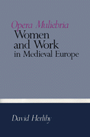

Vividly demonstrates that the subordination of women within a household economy was specifically the product of the late Middle Ages
Vividly demonstrates that the subordination of women within a household economy was specifically the product of the late Middle Ages


 Vividly demonstrates that the subordination of women within a household economy was specifically the product of the late Middle Ages
Vividly demonstrates that the subordination of women within a household economy was specifically the product of the late Middle Ages

|  |
Opera MuliebriaWomen and Work in Medieval EuropeDavid Herlihycloth EAN: 978-0-87722-714-4 (ISBN: 0-87722-714-4) |
"A pioneering synthesis of a millennium of women and work."
—Journal of Economic History
In the early Middle Ages, until as late as the thirteenth century, women were active and independent participants in many sectors of economic life. Even apart from agriculture, they were prominent in all phases of cloth making, in brewing, medicine, education, administration, and in the dispensation of religious counsel. In the late Middle Ages, clearly so by the fifteenth century, women lost that prominence as well as their economic independence. Using a great variety of original sources, both literary and statistical, David Herlihy vividly demonstrates that the subordination of women within a household economy was specifically the product of the late Middle Ages.
Opera Muliebria, the medieval Latin term for "women�s labors," is the first comprehensive survey of women�s participation in economic activities throughout Europe from ancient times to about 1500. Herlihy illustrates how medieval women lived and worked, and how their lives were transformed as the Middle Ages ended. He traces the dramatic change in their participation in productive enterprise to the establishment of guild monopolies and reveals that the virtual confinement of women�s labors to work within the home was not an ancient arrangement, but rather the heritage of the late Middle Ages.
Covering the entire continent of Europe for over a millennium of its history, Herlihy�s work contributes to a better understanding not only of medieval women but of the entire social world of the Middle Ages.
David Herlihy is Mary Critchfield and Barnaby Keeney Professor of History at Brown University and President of the American Historical Association in 1990. He is the author of several books including Medieval Households.
© 2015 Temple University. All Rights Reserved. This page: http://www.temple.edu/tempress/titles/772_reg.html.